Content Aware is a collection inspired by the Hongdae streetstyle, but placed in a world of neo noir cyberpunk.
It’s athleasure-heavy garments where aesthetic decisions have been left to digital coincidence.
The print designs are all created with content aware techniques and the 3D-printed accessories are printed in ways so that the software and hardware have been forced to do their own choices.
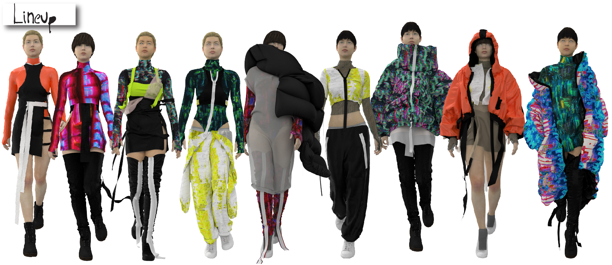
The digitalism in this project is one of its' strongest components.
Nothing would complete its' purpose more than if it only existed in a virtual world or someones Insta-story.
All prints are created in a process starting with an image that gets destroyed and rebuild with content aware tool.
All digital print on recycled polyester and silk.
I've completely digitized my design process by pre-modelling 3D-versions of the garments.
This way, no paper or fabric is used besides from the material in the final products.
 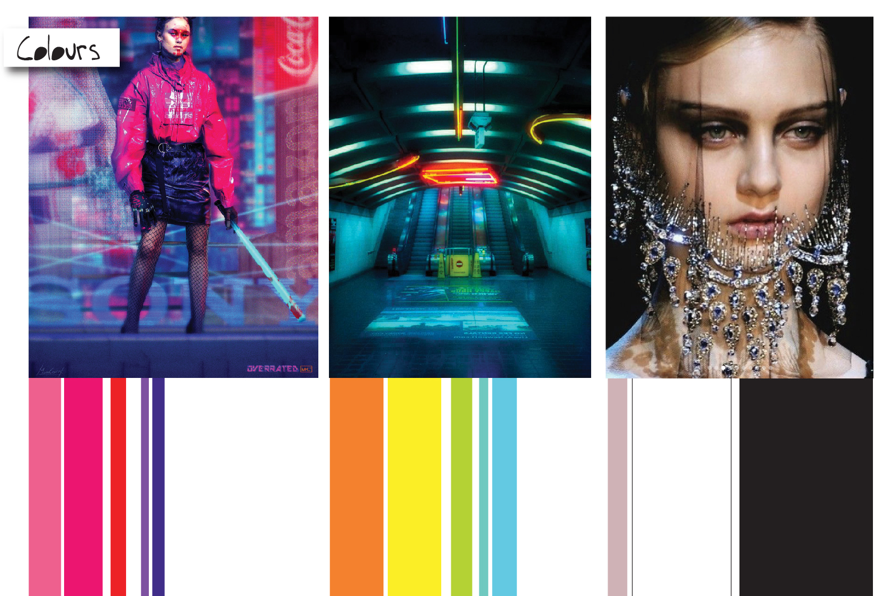
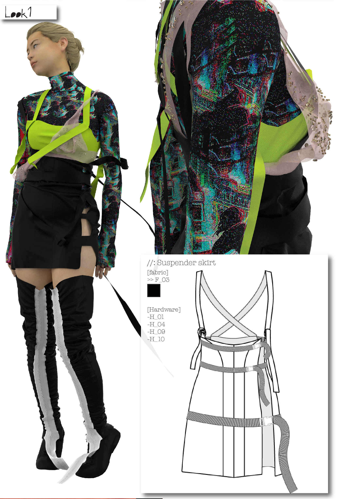
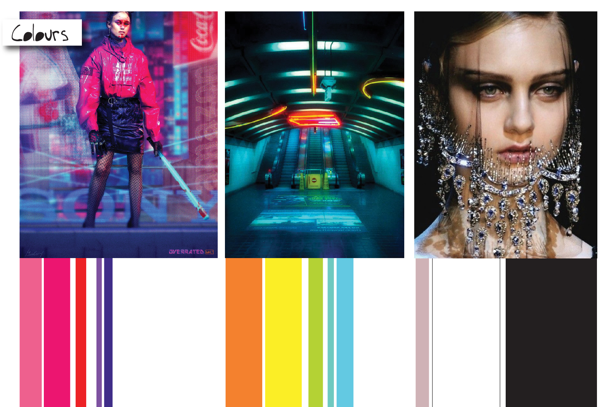
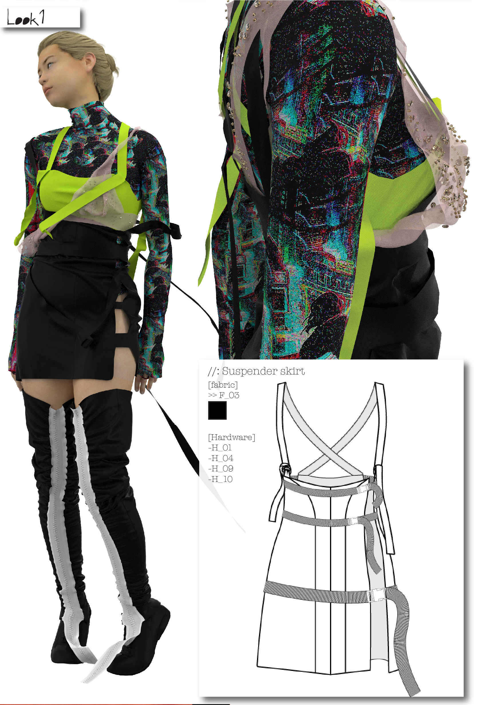


 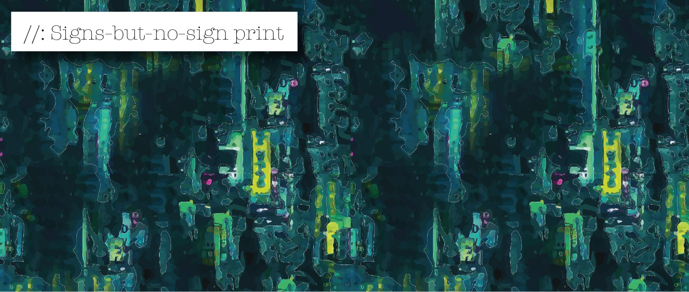
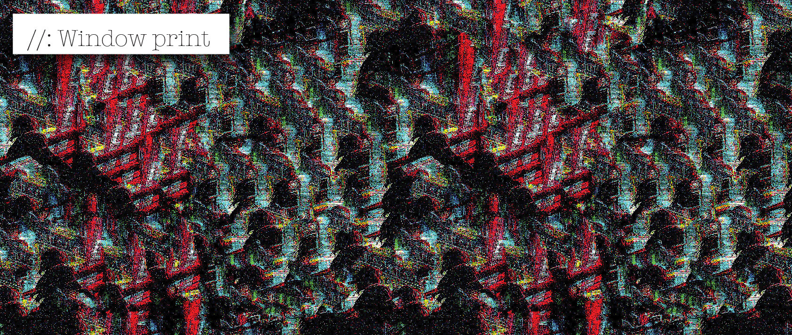
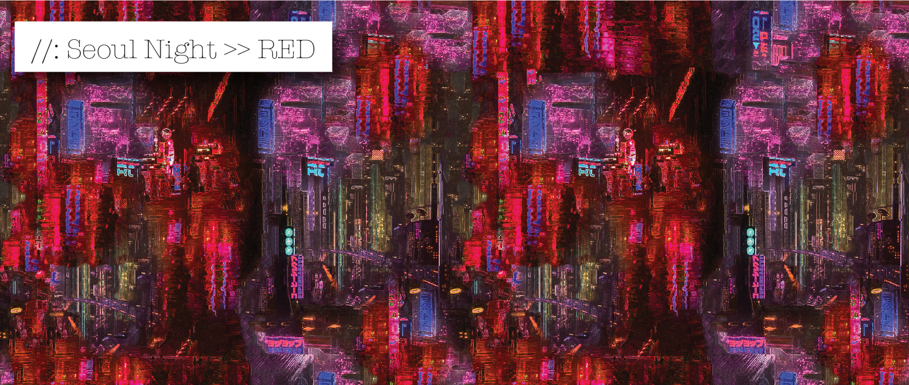
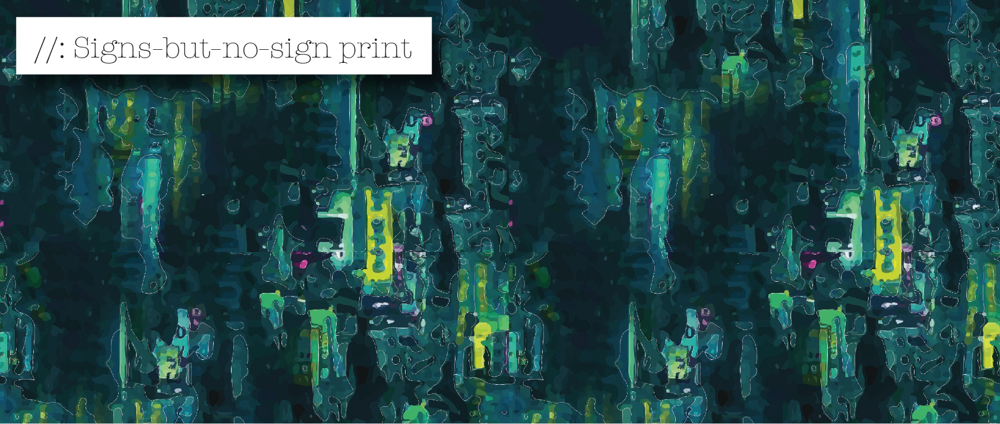
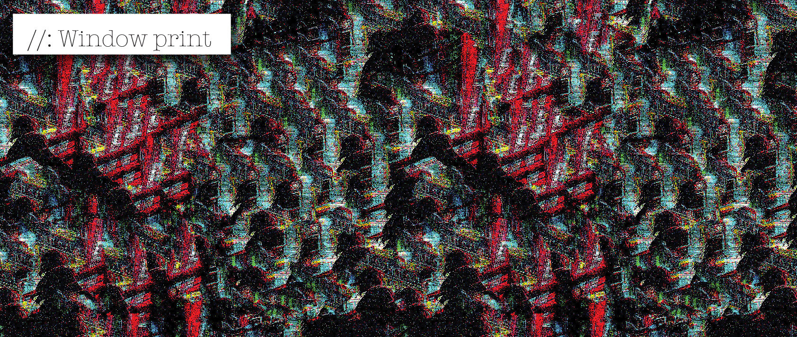
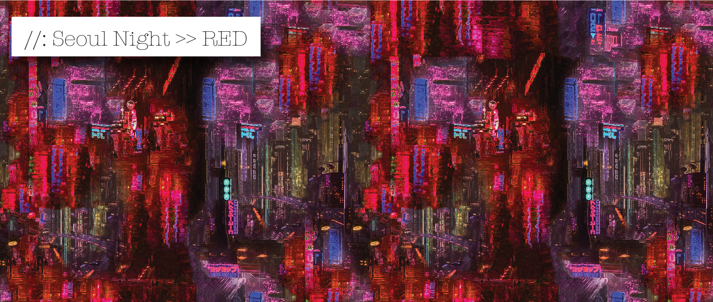